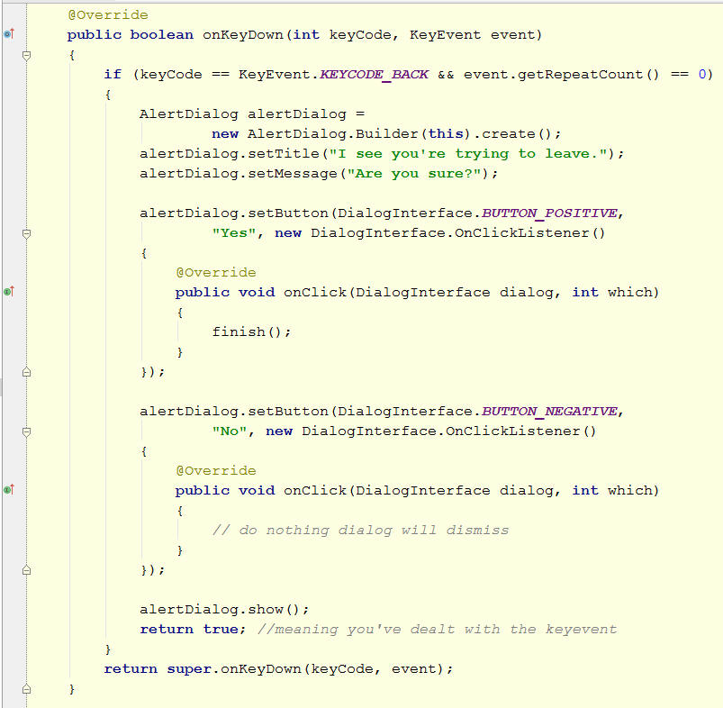

In the previous lab we implemented a simple puzzle game. While this "sort of worked" it fell short of a typical app in a number of ways:
You'll now work through extending the app in the following ways:
There is also an exercise to add more features to the app; a solution will be circulated later in the course.
In the further reading section there is a link to a moderately complex ActivityLifecycle demonstration app. Prior to studying the app it is a good idea to simply override the lifecycle methods in your main activity in order to gain a greater understanding of when the lifecycle events occur. You can do this simply by writing messages to the LogCat. The methods to override are:
Don't forget to always call the superclass method first!
Currently the underlying state of the app is stored in the LightsModel object. Therefore it is sufficient to save a copy of this between device orientation transitions. There are two methods that can be overriden in the Activity class to handle this easily: they are onSaveInstanceState and onRestoreInstanceState. An object that holds the current state may contain many fields, so rather than extracting and saving each one separately it is easier to serialize the entire model object, and put this into the Bundle. For more details of what can be done with Bundle objects refer to the Bundle documentation.
For now we just need to be able to store and retrieve objects. The way we use a bundle is as a set of maps for each specific data type we wish to store. In order to save and load the model we define a static String referred to as modelKey. The code to save and load the model in our main Activity class is then as shown below. Note that we're using the putSerializable() method of Bundle: for this to work the object (in this case LightsModel) must be declared serializaable, as in:
public class LightsModel implements Serializable {
// rest of class definition omitted
// note that any other Object fields would
// also need to be declared serializable
// but LightsModel does not have any
}
Note that I've used a call to getModel() to get the current model. This is defined as follows:
Where nDefault is a static int declaring the default size of n x n grid use for the model. In this way a valid model is always stored.
Check that this works by changing the device orientation and confirming that the state is retained. This can be done using <CTRL><F11>.
A working solution to the LightsOn puzzle this far can be found here. Note that compared to the code presented in the previous lab, the coupling between the different classes has been reduced. In particular, LightsView no longer keeps a reference to a LightsModel object. It now only keeps a reference to the parent activity, and then calls the getModel method of that whenever it needs access to the LightsModel object. Question: why is this better (if indeed it is!)?
Although many apps are self explanatory you may want to add some instructions or other form of documentation or company information, and a good way to do this is to provide an HTML file. This can include images as necessary.
We'll do this initially by adding a new Activity.
The new activity is called AboutActivity: it's main purpose is to display a WebView. A WebView acts as an embedded web browser.
Beyond this, we enable the "up" arrow in the action bar in its onCreate method, and then also write a method to handle that. Hence the code is as follows:
In order for this to work you'll need an HTML file called About.html. This should be placed in a directory called assets/html. I suggest you include an image to verify that image inclusion works properly. A sample HTML file plus images can be found here. To use this extract it to your project's assets directory (so the file would appear as assets/html/About.html.)
The next step is to link in the AboutActivity to the main Activity in some way. Here we'll add it to the options menu. This is done by adding the following code to the main Activity class:
Finally, in order for this to work we need to add the new Activity to the AndroidManifest.xml file as follows:
Then, with a suitable HTML file plus image(s), you can see an about activity such as the following:
Note the "<" arrow on the Action Bar - this is the "Up Arrow" we set up with the line getActionBar().setDisplayHomeAsUpEnabled(true);
Many games have a significant loading time, and use a "splash screen" to advertise the publisher and indicate to the user (and the Android system) that the app is doing something.
A technique for doing this using an AsyncTask was covered in the Layouts lecture notes, and is included in the LayoutTest.zip project. Download and run the LayoutTest project and confirm by inspecting the LogCat that the naive threading approach to creating a transient splash screen does indeed cause an exception to be thrown.
Using the AsyncTask approach add a spash screen that should show for a few seconds when the app is first launched. This could be an HTML page or a TextView, or really any type of view of your choice.
Note: the splash screen should not be shown after a device orientation transition. This will require some conditional logic to achieve this. What condition can you test to check whether the spash screen should be shown?
Dialogs are modal views that require user interaction before moving on: the interaction may cause a return to the previous acitvity, or quitting it, or moving to a new activity.
Dialogs come in many forms (refer to the documentation or see the Dialog pallete on the GUI designer of your IDE). Below is an example showing a typical text-based one that gets a user to confirm or cancel an action. It is common in Android development examples to see this amount of code being presented each time a Dialog is required, though it might be possible to cut down on this with some utility code that popped up a Dialog of this type given just a few parameters. Question: how would you do this?
In the example below, the Dialog itself is created in relation to a user hitting the Back Button with the intention of leaving the app. This illustrates how to block a user doing that - or potentially block it. In this case the user is required to confirm that they wish to leave the app.

A typical application often needs to save data to be restored at a later date. Two ways to do this inAndroid are to use Key-Value Sets and to use files. Other alternatives include saving data in a database, e.g. an sqlite database when using Android.
In this part of the lab the aim is to experiment with key-value sets and with file storage. Begin by reading the descriptions here:
Now modify your app by overriding the appropriate lifecycle methods in order to make the state of the puzzle be saved and restored when the app is destroyed and then restarted.
Which activity lifecycle methods will you override to achieve this?
You should already have the model as being serializable, so saving its state in a file is straightforward: simply write it to an ObjectOutputStream (and read it back in from an ObjectInputStream).
If you get time, spend some time adding more features to the game. This part is open-ended. For example, you might:
We'll go through a solution to this later in the course.
Read the Activity Lifecycle documentation, and download and run the ActivityLifecycle.zip demo.